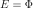
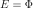
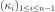

SORMResult¶
-
class
SORMResult(*args)¶ Result of a SORM analysis.
- Available constructors:
- SORMResult(designPoint, limitStateVariable, isInFailureSpace)
Parameters: - designPoint : sequence of float
Design point in the standard space resulting from the optimization algorithm.
- limitStateVariable :
Event Event of which the probability is calculated.
- isInFailureSpace : bool
Indicates whether the origin of the standard space is in the failure space.
See also
Analytical,AnalyticalResult,FORM,FORMResult,StrongMaximumTestNotes
Structure created by the method run() of the
SORMclass and obtained thanks to its method getResult().Methods
drawHasoferReliabilityIndexSensitivity(*args)Draw the sensitivity of the Hasofer Reliability Index. drawImportanceFactors(*args)Draw the importance factors. getClassName()Accessor to the object’s name. getEventProbabilityBreitung()Accessor to the failure probability . getEventProbabilityHohenBichler()Accessor to the failure probability . getEventProbabilityTvedt()Accessor to the failure probability . getGeneralisedReliabilityIndexBreitung()Accessor to the Generalised Reliability Index Breitung. getGeneralisedReliabilityIndexHohenBichler()Accessor to the Generalised Reliability Index HohenBichler. getGeneralisedReliabilityIndexTvedt()Accessor to the Generalised Reliability Index Tvedt. getHasoferReliabilityIndex()Accessor to the Hasofer Reliability Index. getHasoferReliabilityIndexSensitivity()Accessor to the sensitivities of the Hasofer Reliability Index. getId()Accessor to the object’s id. getImportanceFactors(*args)Accessor to the importance factors. getIsStandardPointOriginInFailureSpace()Accessor to know if the standard point origin is in the failure space. getLimitStateVariable()Accessor to the event of which the probability is calculated. getMeanPointInStandardEventDomain()Accessor to the mean point in the standard event domain. getName()Accessor to the object’s name. getOptimizationResult()Accessor to the result of the optimization problem. getPhysicalSpaceDesignPoint()Accessor to the design point in the physical space. getShadowedId()Accessor to the object’s shadowed id. getSortedCurvatures()Accessor to the sorted curvatures. getStandardSpaceDesignPoint()Accessor to the design point in the standard space. getVisibility()Accessor to the object’s visibility state. hasName()Test if the object is named. hasVisibleName()Test if the object has a distinguishable name. setIsStandardPointOriginInFailureSpace(…)Accessor to specify if the standard point origin is in the failure space. setMeanPointInStandardEventDomain(…)Accessor to the mean point in the standard event domain. setName(name)Accessor to the object’s name. setOptimizationResult(optimizationResult)Accessor to the result of the optimization problem. setShadowedId(id)Accessor to the object’s shadowed id. setStandardSpaceDesignPoint(…)Accessor to the design point in the standard space. setVisibility(visible)Accessor to the object’s visibility state. -
__init__(*args)¶ Initialize self. See help(type(self)) for accurate signature.
-
drawHasoferReliabilityIndexSensitivity(*args)¶ Draw the sensitivity of the Hasofer Reliability Index.
Parameters: - width : float, optional
Value to calculate the shift position of the
BarPlot. By default it is 1.0.
Returns: - graphCollection : sequence of two
Graphcontaining a barplot The first graph drawing the sensitivity of the Hasofer Reliability Index to the parameters of the marginals of the probabilistic input vector. The second graph drawing the sensitivity of the Hasofer Reliability Index to the parameters of the dependence structure of the probabilistic input vector.
-
drawImportanceFactors(*args)¶ Draw the importance factors.
Parameters: - type : int, optional
Returns: - graph :
Graph Pie of the importance factors of the probabilistic variables.
-
getClassName()¶ Accessor to the object’s name.
Returns: - class_name : str
The object class name (object.__class__.__name__).
-
getEventProbabilityBreitung()¶ Accessor to the failure probability .
Returns: - probability : positive float
The SORM failure probability according to the Breitung approximation.
-
getEventProbabilityHohenBichler()¶ Accessor to the failure probability .
Returns: - probability : positive float
The SORM failure probability according to the Hohen Bichler approximation.
-
getEventProbabilityTvedt()¶ Accessor to the failure probability .
Returns: - probability : positive float
The SORM failure probability according to the Tvedt approximation.
-
getGeneralisedReliabilityIndexBreitung()¶ Accessor to the Generalised Reliability Index Breitung.
Returns: - index : float
Generalised reliability index evaluated from the Breitung SORM failure probability.
-
getGeneralisedReliabilityIndexHohenBichler()¶ Accessor to the Generalised Reliability Index HohenBichler.
Returns: - index : float
Generalised reliability index evaluated from the Hohen Bichler SORM failure probability.
-
getGeneralisedReliabilityIndexTvedt()¶ Accessor to the Generalised Reliability Index Tvedt.
Returns: - index : float
Generalised reliability index evaluated from the Tvedt SORM failure probability.
-
getHasoferReliabilityIndex()¶ Accessor to the Hasofer Reliability Index.
Returns: - index : float
Hasofer Reliability Index which is the distance of the design point from the origin of the standard space
 .
.
-
getHasoferReliabilityIndexSensitivity()¶ Accessor to the sensitivities of the Hasofer Reliability Index.
Returns: - sensitivity :
PointWithDescription Sequence containing the sensitivities of the Hasofer Reliability Index to the parameters of the probabilistic input vector (marginals and dependence structure) with a description for each component.
- sensitivity :
-
getId()¶ Accessor to the object’s id.
Returns: - id : int
Internal unique identifier.
-
getImportanceFactors(*args)¶ Accessor to the importance factors.
Parameters: - type : int, optional
- When ot.AnalyticalResult.ELLIPTICAL, the importance factors are evaluated as the square of the co-factors of the design point in the elliptical space of the iso-probabilistic transformation (Y-space).
- When ot.AnalyticalResult.CLASSICAL they are evaluated as the square of the co-factors of the design point in the U-space.
- When ot.AnalyticalResult.PHYSICAL, the importance factors are evaluated as the square of the physical sensitivities.
By default type = ot.AnalyticalResult.ELLIPTICAL.
Returns: - factors :
PointWithDescription Sequence containing the importance factors with a description for each component.
Notes
If the importance factors are evaluated as the square of the co-factors of the design point in the U-space :
If the importance factors are evaluated as the square of the co-factors of the design point in the Y-space :
where
with is the design point in the physical space and
 the univariate standard CDF of the elliptical space. In the case where the
input distribution of
the univariate standard CDF of the elliptical space. In the case where the
input distribution of  has an elliptical copula
, then has the same type as .
In the case where the input distribution of has a copula
has an elliptical copula
, then has the same type as .
In the case where the input distribution of has a copula
 which is not elliptical, then  where
which is not elliptical, then  where  is the CDF of the standard normal.
is the CDF of the standard normal.If the importance factors are evaluated as the square of the physical sensitivities :
where
-
getIsStandardPointOriginInFailureSpace()¶ Accessor to know if the standard point origin is in the failure space.
Returns: - isInFailureSpace : bool
Indicates whether the origin of the standard space is in the failure space.
-
getLimitStateVariable()¶ Accessor to the event of which the probability is calculated.
Returns: - limitStateVariable :
Event Event of which the probability is calculated.
- limitStateVariable :
-
getMeanPointInStandardEventDomain()¶ Accessor to the mean point in the standard event domain.
Returns: - meanPoint :
Point Mean point of the standard space distribution restricted to the event domain: where is the spheric univariate distribution of the standard space and
 the reliability index.
the reliability index.
- meanPoint :
-
getName()¶ Accessor to the object’s name.
Returns: - name : str
The name of the object.
-
getOptimizationResult()¶ Accessor to the result of the optimization problem.
Returns: - result :
OptimizationResult Contains the design point in the standard space and information concerning the convergence of the optimization algorithm.
- result :
-
getPhysicalSpaceDesignPoint()¶ Accessor to the design point in the physical space.
Returns: - designPoint :
Point Design point in the physical space resulting from the optimization algorithm.
- designPoint :
-
getShadowedId()¶ Accessor to the object’s shadowed id.
Returns: - id : int
Internal unique identifier.
-
getSortedCurvatures()¶ Accessor to the sorted curvatures.
Returns: - curvatures :
Point Curvatures of the standard limite state function at the standard design point  with
 the dimension
of the random vector .
the dimension
of the random vector .
- curvatures :
-
getStandardSpaceDesignPoint()¶ Accessor to the design point in the standard space.
Returns: - designPoint :
Point Design point in the standard space resulting from the optimization algorithm.
- designPoint :
-
getVisibility()¶ Accessor to the object’s visibility state.
Returns: - visible : bool
Visibility flag.
-
hasName()¶ Test if the object is named.
Returns: - hasName : bool
True if the name is not empty.
-
hasVisibleName()¶ Test if the object has a distinguishable name.
Returns: - hasVisibleName : bool
True if the name is not empty and not the default one.
-
setIsStandardPointOriginInFailureSpace(isStandardPointOriginInFailureSpace)¶ Accessor to specify if the standard point origin is in the failure space.
Parameters: - isInFailureSpace : bool
Indicates whether the origin of the standard space is in the failure space.
-
setMeanPointInStandardEventDomain(meanPointInStandardEventDomain)¶ Accessor to the mean point in the standard event domain.
Parameters: - meanPoint : sequence of float
Mean point of the standard space distribution restricted to the event domain: where is the spheric univariate distribution of the standard space and
the reliability index.
-
setName(name)¶ Accessor to the object’s name.
Parameters: - name : str
The name of the object.
-
setOptimizationResult(optimizationResult)¶ Accessor to the result of the optimization problem.
Parameters: - result :
OptimizationResult Contains the design point in the standard space and information concerning the convergence of the optimization algorithm.
- result :
-
setShadowedId(id)¶ Accessor to the object’s shadowed id.
Parameters: - id : int
Internal unique identifier.
-
setStandardSpaceDesignPoint(standardSpaceDesignPoint)¶ Accessor to the design point in the standard space.
Parameters: - designPoint : sequence of float
Design point in the standard space resulting from the optimization algorithm.
-
setVisibility(visible)¶ Accessor to the object’s visibility state.
Parameters: - visible : bool
Visibility flag.